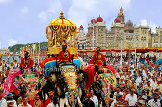
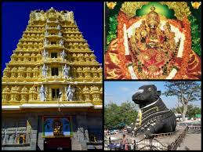
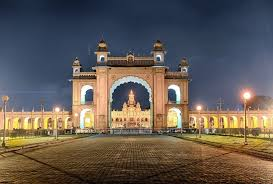
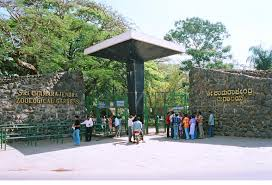
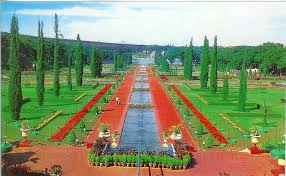
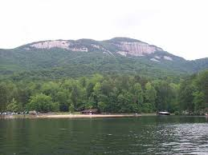

| Images | Know the Facts!!! |
|---|---|
|  | Mysuru DasaraDasara is the most extravagant festival of Mysore. This festival has been celebrated in Mysore with great pomp and show since centuries. This tradition is still carried on though the scale of the celebrations has been watered down. The Dasara festival is celebrated in the months of September and October each year. According to Hindu mythology the festival celebrates and commemorates the victory of Goddess Chamundeshwari after slaying the demon Mahishasura and the triumph of good over evil. The Dasara festivities have become an integral part of the culture and life in Mysore. A two-month long Dasara Exhibition is held at the Doddakere Maidan, in which several business and industrial houses take part. Apart from this a Food and Film festival is also organized. During the festivities special religious ceremonies are held at different temples in Mysore especially the Chamundeshwari Temple on top of the Chamundi Hills. The high point of the Dasra celebrations is the Vijayadashami procession held on the tenth day. The finale of the celebrations is the state organized procession consisting of floats, the police and their bands, mounted guards in royal livery and folk artists and musicians. |
|  | Chamundi TempleChamundi Hill is about 13 kms from Mysore, which is a prominent city in Karnataka State, India. Chamundi Hills is famous not only in India but also abroad. Atop of the hill the famous Sri Chamundeswari Temple. Chamundi or Durga is the fierce form of Shakti. She is the slayer of demons, Chanda and Munda and also Mahishasura, the buffalow-headed monster. She is the tutelary deity of the Mysore Maharajas and the presiding deity of Mysore. For several centuries they have held the Goddess, Chamundeswari, in great reverence. |
|  | Mysuru PalaceIt is the official residence of the Wadiyars - the erstwhile royal family of Mysuru, and also houses two durbar halls (ceremonial meeting hall of the royal court). Mysuru has a number of historic palaces, and is commonly described as the City of Palaces. However, the term "Mysuru Palace" specifically refers to one within the old fort. The palace was commissioned in 1897, and its construction was completed in 1912. It is now one of the most famous tourist attractions in Mysuru. |
|  | Mysuru ZooMysuru Zoo (Chamarajendra Zoological Garden) was started in 1892 by chamaraja Wodeyar X, then the king of Mysuru. Initially as a private Zoo, and was named as Khas-Bangale. It was also called as Thamash Bangle. The Zoo which has now spread over an area of 250 acres was initially ment for the exclusive visit of the royal family but public entry started as early as 1920. It is located inside the city unlike many other Zoos in India and Mysuru Zoo is considered to be one of the best in the world. |
|  | Brindavan GardenOne of the most visited places in Mysore by locals and by tourists is the famous Brindavan Gardens. Located about 19kms from the heart of Mysore these beautiful gardens are laid out below the Krishnaraja Sagar dam built across the river Cauvery. These gardens are famous for the illuminated dancing fountains that come to life after sunset. The Krishnaraja Sagar Dam (KRS) (known as Kannambadi to the locals) itself is a superb example of excellent engineering and itself is a tourist attraction in Mysore. Sir M. Vishveswariah, one of India's finest engineers, built it in 1924. |
|  | LakesKukkarahalli Lake, noted as a prominent attraction of Mysore, is situated in the middle of Manasagangothri, the Mysore University campus.This lake was built in the year 1864 by Mummadi Krishnaraja Wadiyar as a major source of irrigation. Visitors can enjoy an amazing view of the lake from the north shore, as it looks extremely attractive with trees and the Chamundi Hills in the background. Karanji Lake is located at the foot of Chamundi hills and adjascent to the Mysuru Zoo, the Karanji lake is a beautiful bird sanctuary in the heart of Mysuru City which provides a wonderful habitat for more than 70 different species of avifauna. |